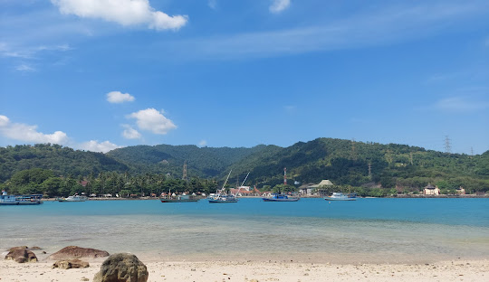
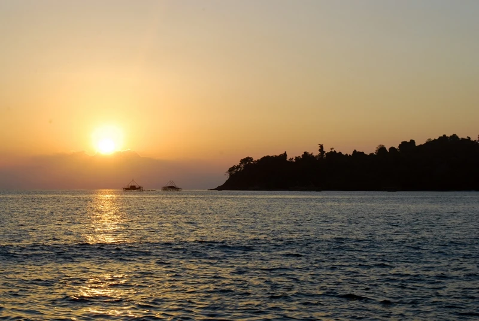
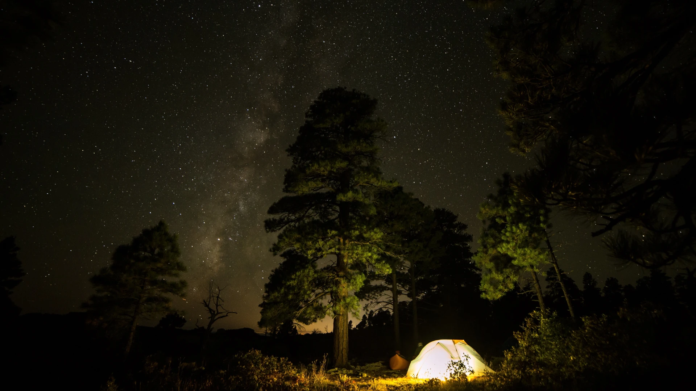

Pulau Merak Kecil
Pulau Merak Kecil adalah sebuah pulau kecil yang terletak di Selat Sunda, di lepas pantai utara Banten, Indonesia. Pulau ini merupakan bagian dari Kecamatan Pulomerak, Kota Cilegon. Pulau Merak Kecil memiliki luas sekitar 2,5 hektar.

Keunggulan
Pulau Merak Kecil terkenal dengan pantainya yang indah dan air lautnya yang jernih. Pulau ini adalah tujuan wisata populer bagi penduduk lokal dan wisatawan domestik. Aktivitas populer di Pulau Merak Kecil termasuk berenang, snorkeling, memancing, dan berkemah.
Matahari Terbenam

Menyaksikan matahari terbenam di tepi pantai menawarkan pengalaman yang tak terlupakan. Langit yang dihiasi gradasi warna jingga, merah, dan ungu memancarkan pesona magis yang mampu memikat siapapun yang melihatnya. Semburat warna hangat tersebut seolah membungkus bumi dengan selimut ketenangan, menenangkan jiwa yang lelah.
Berkemah

Berkemah di sebuah pulau menawarkan pengalaman yang jauh berbeda dari berkemah di daratan. Pasir putih yang halus, air laut yang jernih, dan deretan pohon kelapa yang melambai-lambai menciptakan panorama yang menakjubkan. Keindahan ini memberikan ketenangan dan kedamaian bagi jiwa, jauh dari hiruk pikuk kehidupan di kota.
Lokasi
Pulau Merak Kecil berlokasi di Kelurahan Mekarsari Kecamatan Pulomerak Kota Cilegon. Bagi anda yang berasal dari luar Provinsi Banten anda tidak perlu khawatir. Anda dapat menggunakan moda transportasi umum yaitu Commuter Line. Berikut cara menuju Pulau Merak Kecil dengan Commuter Line Merak.
-
Perjalanan dimulai dari Stasiun Tanah Abang, silahkan anda pergi ke Stasiun Tanah Abang terlebih dahulu dan menaiki Commuter Line tujuan Stasiun Rangkasbitung.
-
Setelah tiba di Stasiun Rangkasbitung, silahkan membeli tiket menuju Stasiun Merak. Pembelian tiket dapat dilakukan di loket yang tersedia atau menggunakan aplikasi Access By KAI.
-
Setelah tiba di Stasiun Merak, anda dapat menggunakan ojek atau taksi online, atau menggunakan moda transportasi angkutan umum atau angkot dengan tujuan Hotel Pelangi Merak.
-
Setelah tiba di Hotel Pelangi Merak, anda perlu menyeberang menggunakan perahu yang tersedia.
-
Selamat! Anda telah tiba di Pulau Merak Kecil.
Apa Kata Mereka?
Jhon Doe
Matahari terbenam yang sangat indah.
Jack Doe
Lautan yang indah dan mempesona.
Jane Doe
Berkemah di sebuah pulau menambah pengalaman yang berharga.